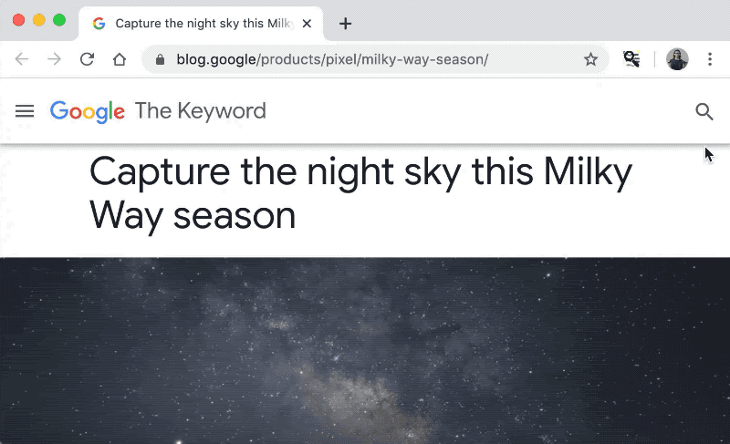

Exploring helpful uses for BERT in your browser with Tensorflow.js
Posted by Philip Bayer, Creative Technologist; Ping Yu, Software Engineer; and Jason Mayes, Developer Advocate
There’s a lot of exciting research happening now exploring helpful uses of BERT for language. We wondered: what if we made BERT even more accessible, right in your web browser? What possible uses might this enable?
It’s easy to ask Google a question like “How tall is the statue of liberty?” and get the answer (305 feet) from the web. However, there's no easy way to ask natural language questions of specific content - like a news article, research paper, or blog post. You can try using the find-in-page search feature of your browser (CTRL + F) but that relies on direct word matching. Wouldn’t it be easier to type a question, instead of a word to find, and have the page highlight the answer for you?
To explore this idea, we’ve prototyped a Chrome Extension using the MobileBERT Q&A model that allows us to ask a question of any webpage. Using TensorFlow.js, the extension returns an answer based on the contents of the page. The model runs entirely on-device in the browser session, so nothing is ever sent to a server, maintaining privacy.
It’s an early stage experiment, and we’re sharing our findings here in this post to illustrate how such applications can be built from the open-source TensorFlow.js BERT model. It was helpful to explore examples where we got the answer we wanted, and examples where we didn’t get exactly what we expected. It gave us a peek at both its potential and its current limitations. We hope seeing these examples will help everyone be part of the conversation, and enable anyone to think about ideas for how machine learning can be helpful for language.
The model takes a passage and a question as input, then returns a segment of the passage that most likely answers the question. Everything happens client side in the web browser, because we are using TensorFlow.js. This means privacy is protected and no text from the website you are analyzing is ever sent to any server for classification.
If you would like to try the MobileBERT Q&A model yourself we are happy to share that it is now open sourced and can be found on our Github repository here. If you make something you are proud of, share it with the TensorFlow.js team on social using #MadeWithTFJS - we would love to see what you create.
There’s a lot of exciting research happening now exploring helpful uses of BERT for language. We wondered: what if we made BERT even more accessible, right in your web browser? What possible uses might this enable?
It’s easy to ask Google a question like “How tall is the statue of liberty?” and get the answer (305 feet) from the web. However, there's no easy way to ask natural language questions of specific content - like a news article, research paper, or blog post. You can try using the find-in-page search feature of your browser (CTRL + F) but that relies on direct word matching. Wouldn’t it be easier to type a question, instead of a word to find, and have the page highlight the answer for you?
To explore this idea, we’ve prototyped a Chrome Extension using the MobileBERT Q&A model that allows us to ask a question of any webpage. Using TensorFlow.js, the extension returns an answer based on the contents of the page. The model runs entirely on-device in the browser session, so nothing is ever sent to a server, maintaining privacy.
It’s an early stage experiment, and we’re sharing our findings here in this post to illustrate how such applications can be built from the open-source TensorFlow.js BERT model. It was helpful to explore examples where we got the answer we wanted, and examples where we didn’t get exactly what we expected. It gave us a peek at both its potential and its current limitations. We hope seeing these examples will help everyone be part of the conversation, and enable anyone to think about ideas for how machine learning can be helpful for language.
|  |
| Using the chrome extension, ask a question about the article and receive an answer. |
Our findings
Here are some results we found where we got helpful answers:- This article about crabs — Question: “How do they move?” Answer: “Crabs typically walk sideways”
- This product page for a headlamp — Question: “Can it get wet?” Answer: “submersion in up to 1m of water for 30min”
- This car review — Question: “Gas mileage” Answer: “19 miles per gallon in the city”
- This article about a wooden skyscraper: — Question: “How tall is it” Answer: “280 feet in height”
- This lasagna recipe — Question: “How long in the oven” Answer: “25 minutes”
- This product page — Asking “What is the pitcher made of?” Returned “Ice mode pulses at staggered intervals to uniformly crush a pitcher of ice in seconds” instead of the answer “BPA-free polycarbonate pitcher”
- This article — Asking “Were the sharks real?” returned a text “sharks! sharks,” but asking a related question “How did the sharks work?” gave us the more helpful answer of “mechanical sharks often malfunctioned”
How does the machine learning model work?
The MobileBERT Q&A model can be used to build a system that can answer users’ questions in natural language. It was created using a pre-trained BERT model fine-tuned on SQuAD 1.1 (Stanford Question Answering Dataset). This is a new method of pre-training language representations which obtain state-of-the-art results on a wide array of Natural Language Processing (NLP) tasks. We are pleased to announce that this model is now available in TensorFlow.js for your own use. The MobileBERT model is a compact BERT variant which can be deployed to resource-limited devices.The model takes a passage and a question as input, then returns a segment of the passage that most likely answers the question. Everything happens client side in the web browser, because we are using TensorFlow.js. This means privacy is protected and no text from the website you are analyzing is ever sent to any server for classification.
TensorFlow.js BERT API
Using the model is super easy. Take a look at the following code snippet:<!-- Load TensorFlow.js. This is required to use the qna model. -->
<script src="https://cdn.jsdelivr.net/npm/@tensorflow/tfjs"> </script>
<!-- Load the qna model. -->
<script src="https://cdn.jsdelivr.net/npm/@tensorflow-models/qna"> </script>
<!-- Place your code in the script tag below. You can also use an external .js file -->
<script>
// Notice there is no 'import' statement. 'qna' and 'tf' is
// available on the index-page because of the script tag above.
// Load the model.
qna.load().then(model => {
model.findAnswers(question, passage).then(answers => {
console.log('Answers: ', answers);
});
});
</script>[
{
text: string,
score: number,
startIndex: number,
endIndex: number
}
]If you would like to try the MobileBERT Q&A model yourself we are happy to share that it is now open sourced and can be found on our Github repository here. If you make something you are proud of, share it with the TensorFlow.js team on social using #MadeWithTFJS - we would love to see what you create.
Next post

TensorFlow Core
Recap of the 2020 TensorFlow Dev Summit
March 12, 2020 — Posted by Laurence Moroney, Developer Advocate
Thanks to everyone who joined our virtual TensorFlow Dev Summit 2020 livestream! While we couldn’t meet in person, we hope we were able to make the event more accessible than ever.
We’re recapping all the new updates we shared in this blog post. You can find the recording of the keynote and talks on the TensorFlow YouTube channel.
TensorFlow 2.2 Aft…